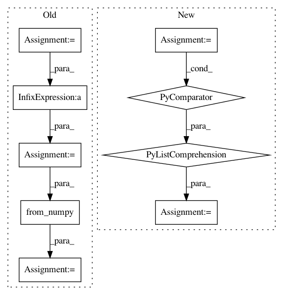

1ef3ad90a3423ed15ca41e0ea4e81012ebe84a9f,catalyst/data/scripts/project_embeddings.py,,main,#Any#Any#,88
Before Change
img_data = np.stack(
[load_image(name, args.img_size) for name in image_names], axis=0
)
img_data = (
img_data.transpose((0, 3, 1, 2)) / 255.0 // noqa: WPS432
).astype(np.float32)
img_data = torch.from_numpy(img_data)
else:
img_data = None
summary_writer = SummaryWriter(args.out_dir)
After Change
if args.num_rows is not None:
indices = np.random.choice(len(df), args.num_rows)
features = features[indices, :]
df = df.iloc[indices]
if args.img_col is not None:
img_data = _load_image_data(
rootpath=args.img_rootpath, paths=df[args.img_col].values
)
else:
img_data = None
summary_writer = SummaryWriter(args.out_dir)
metadata = df[meta_header].values.tolist()
metadata = [
[
str(text)
.replace("\n", " ")
.replace(r"\s", " ")
.replace(r"\s\s+", " ")
.strip()
for text in texts
]
for texts in metadata
]
assert len(metadata) == len(features)
summary_writer.add_embedding(
features,
metadata=metadata,
In pattern: SUPERPATTERN
Frequency: 3
Non-data size: 9
Instances
Project Name: catalyst-team/catalyst
Commit Name: 1ef3ad90a3423ed15ca41e0ea4e81012ebe84a9f
Time: 2020-08-11
Author: scitator@gmail.com
File Name: catalyst/data/scripts/project_embeddings.py
Class Name:
Method Name: main
Project Name: rusty1s/pytorch_geometric
Commit Name: 17e56b9100275068c7ad0e74c0bf247866da846f
Time: 2020-05-31
Author: j-magnusson@t-online.de
File Name: torch_geometric/utils/geodesic.py
Class Name:
Method Name: geodesic_distance
Project Name: rusty1s/pytorch_geometric
Commit Name: cce4382f73d0976fb94b003949acd668377a0869
Time: 2020-04-03
Author: j-magnusson@t-online.de
File Name: torch_geometric/utils/geodesic.py
Class Name:
Method Name: geodesic_distance